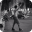

Picos
Favoritos
Ver todos-

Wallride da FGP
Júlia Fonseca
-

Borda de valores
Júlia Fonseca
-

Wallride do Rebouças
Júlia Fonseca
-

Segundo setor da Praça Mauá
Júlia Fonseca
-
Borda de valores
Júlia Fonseca
-
Wallride do Rebouças
Júlia Fonseca
Picos mais vistos
Bruno Lopes
Gap do Itaú da Voluntários da Pátria
53 visualizações
Luiza Sampaio
Gap com mureta da Voluntários
53 visualizaçõess
André Soares
Rampa da entrada do túnel Rebouças
53 visualizaçõess
Júlia Fonseca
Wallride de pedra portuguesa da FGP
53 visualizaçõess